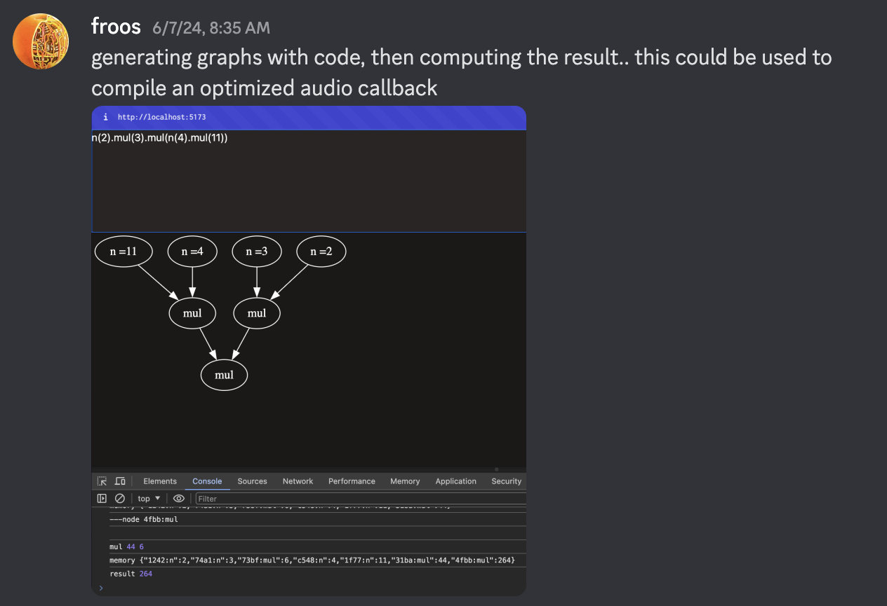
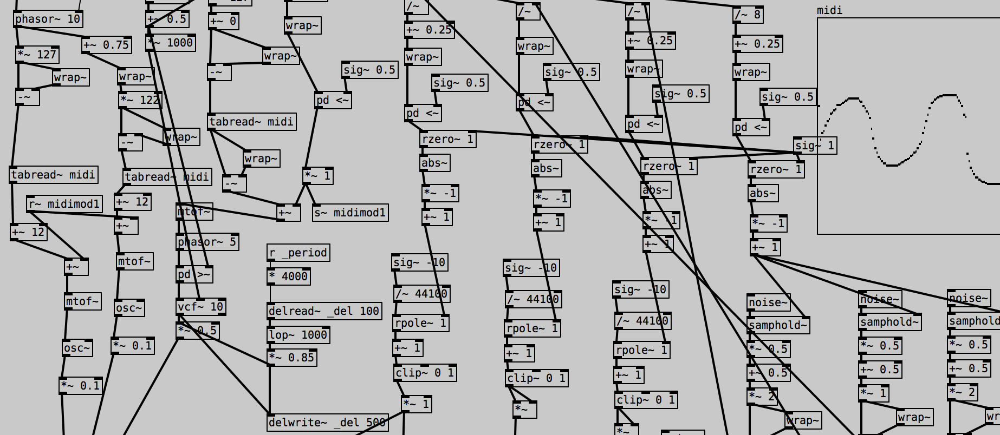
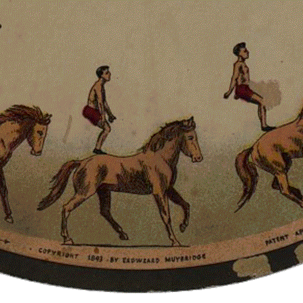
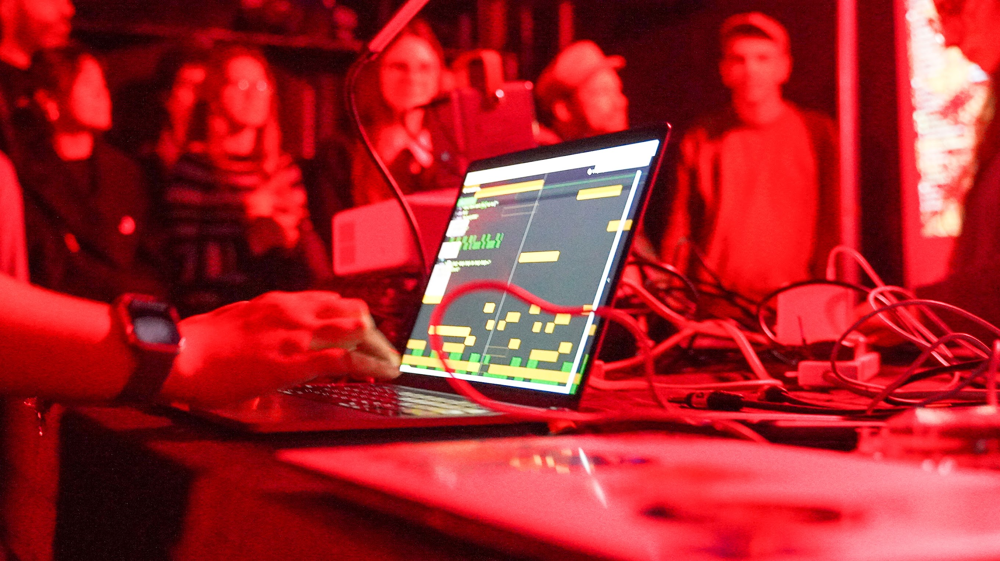
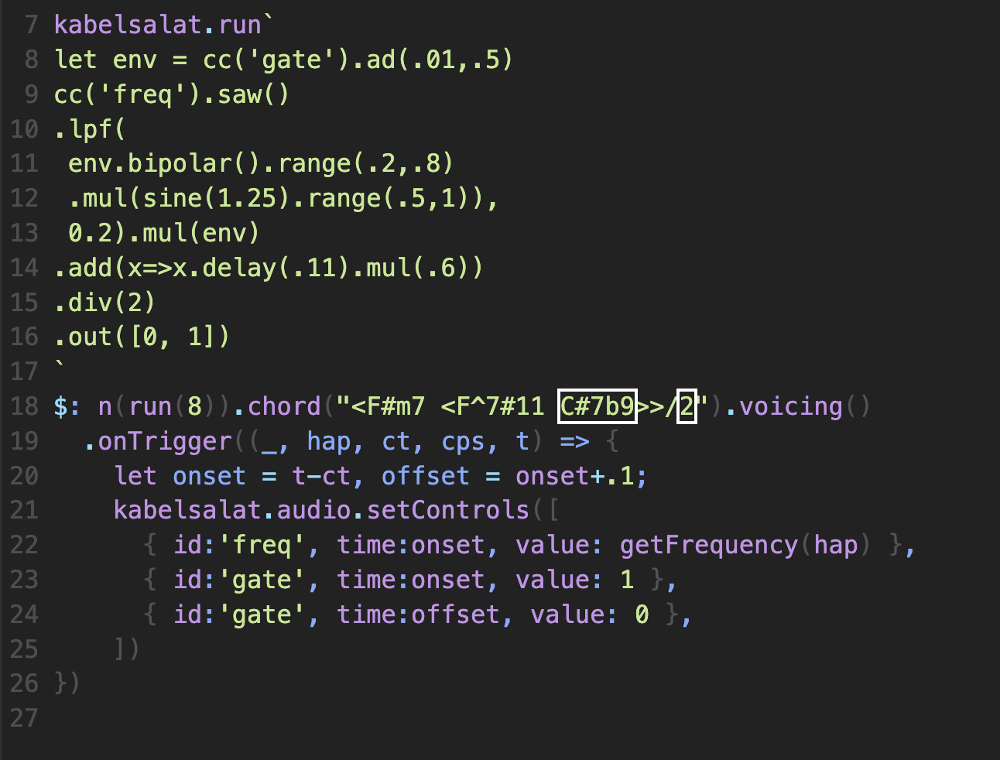
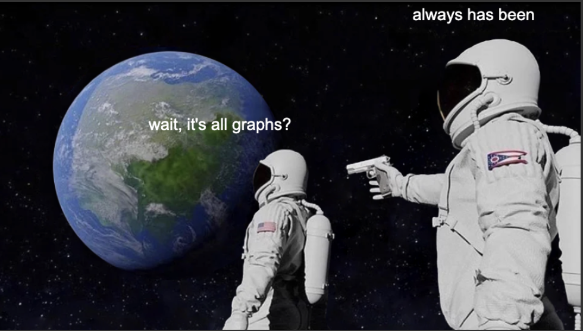

1.graph based
2.language
3.for
4.audio
5.visual
6.live coding
7.on the web
8.and beyond
1.graph based
2.language
3.for
4.audio
5.visual
6.live coding
7.on the web
8.and beyond
1.graph based
2.language
3.for
4.audio
5.visual
6.live coding
7.on the web
8.and beyond
1.graph based
2.language
3.for
4.audio
5.visual
6.live coding
7.on the web
8.and beyond
1.graph based
2.language
3.for
4.audio
5.visual
6.live coding
7.on the web
8.and beyond
1.graph based
2.language
3.for
4.audio
5.visual
6.live coding
7.on the web
8.and beyond
1.graph based
2.language
3.for
4.audio
5.visual
6.live coding
7.on the web
8.and beyond
1.graph based
2.language
3.for
4.audio
5.visual
6.live coding
7.on the web
8.and beyond
1.graph based
2.language
3.for
4.audio
5.visual
6.live coding
7.on the web
8.and beyond
kabelsalat

Why Another Live Coding System?
- OG goal: live codable audio DSP for Strudel
- I want to learn: learning through making
- Inner peace
- Why not use web tool X Y Z?
- Dynamically spawning graphs
- Single sample feedback
- I cannot learn from big codebases
- Minimalism
- Fun
History
- Started playing with Bytebeat in late 2023
-
Made wacky
Patcher UI
-
Found
noisecraft, adapted it for Live Coding
- Kabelsalat project started on june 7, 2024
- also inspired by:
- SuperCollider
- Hydra
- Strudel
- "It's like Hydra and Strudel having a baby"
-
Many details on
garten.salat.dev
- In active development

noisecraft

-
github.com/maximecb/noisecraft
- Project by Maxime Chevalier-Boisvert
- Modular synth patcher for the browser
- Minimal (readable) codebase
- AudioWorklet only
- Interesting compilation technique
- Kabelsalat started as a noisecraft fork
- I gradually adapted it for live coding
- Ended up rewriting most parts
- New compiler
- Multichannel expansion
- Feedback anywhere
- More DSP
1.graph based

- Pure Data, Max, Modular synths, ...
- Modules + cables = graph
- ..to model signal flow
- Each module has inputs and outputs
Method chaining:
saw(55).lpf(200).out()
Node data structure:
{
"type": "out",
"ins": [
{
"type": "lpf",
"ins": [
{
"type": "saw",
"ins": [55]
}
200
]
}
]
}
interface Node {
type: string;
ins: (Node | number)[]
}
interface Node {
type: string;
ins: (Node | number)[]
}
Functional composition:
out(lpf(saw(55), 200))
Imperative steps:
r[0] = saw(55)
r[1] = lpf(r[0], 200)
out(r[1])
- Left to right reading
- No nesting
- like Hydra / Strudel
- This is syntactic sugar for...
- Inside out
- Nesting
- Less readable
- These nested functions generate...
- This is like a syntax tree
- We can iterate over this
- We can do cool graph tricks
- We can optimize it
- We can compile this to...
- Machine friendly (low abstraction)
- Language agnostic
- Top to bottom
- Flat call structure
Chain:
return add(4, 2).mul(3).div(2).out()
Multichannel expansion:
- SuperCollider-like
- poly-Node propagates through the graph
- Good for multichannel Audio
Feedback with lambdas:
Don't forget to step through it
3.for

We love repetition
4.audio

- Run ~48000 times per second
- Make sure result is between -1 and 1
DSP REPL:
- the $.dsp function runs for every sample = 48kHz
- $.l and $.r are the left and right speakers
Bytebeat example:
- only uses current time and math to make noise
- ackchually this is floatbeat
5.visual

- Graphs are also useful for visuals
- Proof of concept: hydro
- Compiles Kabelsalat Node's to GLSL code
-
codeberg.org/froos/hydro
6.live coding

- How can we interact with the code?
- by text
- by in-source UI
- via MIDI
- What happens when we update the code?
- How do we maintain a sense of time
spawn:
- Global mutable variables via $
- Spawn to fade between 2 or more graphs
- -> No audible cracks
Maintain time:
- "??=" -> nullish coalescing assignment
- .. block based evaluation (TBD)
Kabelsalat -> Strudel

8.and beyond
- C compilation
- Mondo Kabelsalat
- WebAssembly Kabelsalat
- KabelSalat -> sclang
- What would you do with this?

Thanks
- Raphael Forment
- Maxime Chevalier-Boisvert
- ICLC
- You